In the circuit below, the voltage source is
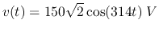,
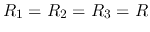, and the three currents 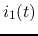, 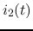, and 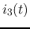 have
the same amplitudes. Moreover, it is also known that the total real power
consumption of the circuit is 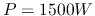. Find  , 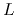, and
, 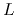, and  , also find
, , and .
, also find
, , and .

Solution:
Represent voltage source  by phasor
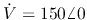, and the voltage
across the parallel branches (RC and RL) by 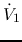, also represent the currents
by 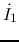,
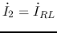,
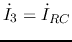.
by phasor
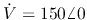, and the voltage
across the parallel branches (RC and RL) by 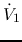, also represent the currents
by 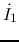,
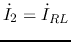,
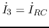.
As
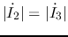, we have
Since
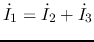, and
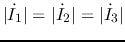,
we know they form an equilateral triangle, i.e.,
In the circuit below, 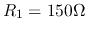, 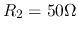,  ,
,  .
The input voltage is
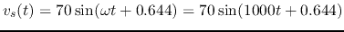.
The system is in steady state before the switch is closed at
.
The input voltage is
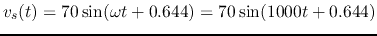.
The system is in steady state before the switch is closed at  . Find voltage
. Find voltage
 across
across  and current
and current  through for
through for  .
.

Solution:
The phasor form of the input voltage is:
For  , the switch is closed,
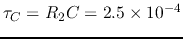,
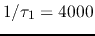,
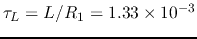, 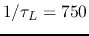.
As the steady state of
, the switch is closed,
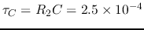,
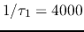,
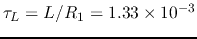, 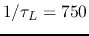.
As the steady state of  is zero, we can find
is zero, we can find  to be
to be
Hint: While maximizing or minimizing the magnitude of a complex function with a constant real part, simply find the variable that maximizes or minimizes the imaginary part of the function. No need to use the method you learned in calculus (i.e., set the derivative of the function to zero and solve for the variable).

Solution: